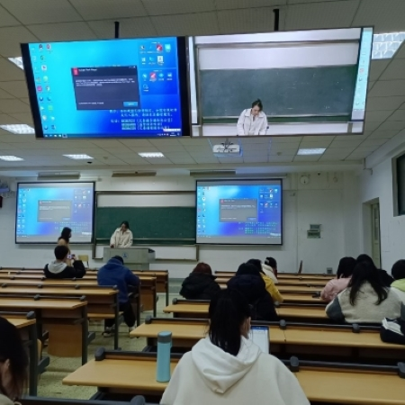
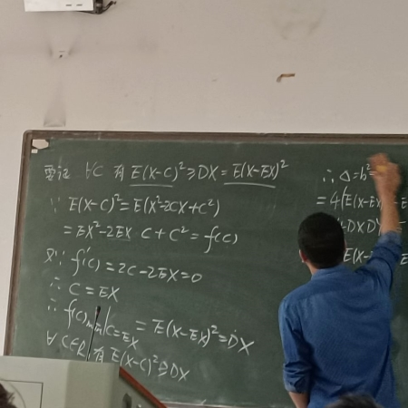

大二下（课表）
《情商管理与训练》 周丽丽


这门课是我大二下学期最喜欢上的课。
因为这门课的内容是我感兴趣的，而且老师人也特别好，她会用自己亲身经历的事结合课程知识来给我们讲授，课堂氛围轻松有趣。
在这门课我也学到了一些有关情商、情绪处理的实用小技巧。

这门课是我比较喜欢的数学课，因为老师教的好。
这门课的老师声音和授课方式跟我的高中物理老师非常像。
他们的声音都非常中气，讲课也非常负责认真，怕我们听不懂一些知识点，还会重复给我们讲。
平时的作业老师批改的很认真，练习册答案还是他亲手写的，可以见得，老师真的非常有责任心。